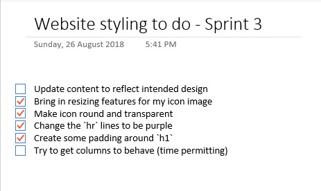

Another way to put it is that the website makes sure the the user experiences the website's content, design, and overall experience regardless of the device size they are using to read the site. Images too big for the screen? Resize them! Heading taking too much real estate on the screen? Resize that too!
Responsiveness is important, as we want the user to experience our website and its content no matter the device they are using to reach our website. Rather than maintaining several source code repositories that are bespoke on a per-screen-type-basis, a well-built responsive website is one that is coded to render to any screen resolution from the one source code repository.
A mobile-first design is a website that has its default rendering behaviour as that on the smallest screen from the device range: mobile phones. Good design and software delivery assumes that the user has limited screen size, and then scales up to larger screens.
Mobile-first design is important for a number of reason:Frameworks are code bases which have been built by other developers. They are built to demonstrate best-practice to other developers through the principle of, Show, don't tell.
The pros of frameworks are:Wireframes are content-agnostic ways of designing the structure of your website. IT enables web developers and designers alike to collaborate, assess feasibility, and agree on the execution of the structure of a website without writing a single line of code. This lets everyone involved in the website know what to expect in general from the structure of the site: no assumptions, no surprises.
Wireframes also help developers organise their code around their website structure, and predict how many columns and rows are going to be needed for their grid-based design.
I used these wireframes to design my website:


I struggled to understand the grid design system until I went through the exercise of wireframing and using the Skeleton CSS.
However, there are bits and pieces I've yet to implement properly, including:
I have parked these things as things to implement and fix in the future: perhaps with a wee bit of help from my friends!
I am even going to keep a list of design goals in my OneNote:
